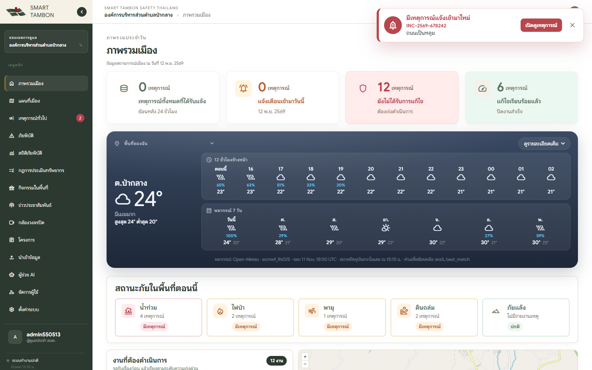

ข้อมูลอยู่หลายไฟล์และหลายหน่วยงาน
ค้นหายากและไม่แน่ใจว่าข้อมูลชุดใดเป็นข้อมูลล่าสุด
ระบบบริหารจัดการความปลอดภัยสำหรับองค์กรปกครองส่วนท้องถิ่น
รวมข้อมูลเมือง แผนที่ เหตุการณ์ ภัยพิบัติ ทรัพยากร และการสื่อสารกับประชาชนไว้ในระบบเดียว ช่วยให้ผู้บริหารเห็นภาพรวม เจ้าหน้าที่ตอบสนองได้รวดเร็ว และประชาชนเข้าถึงบริการได้ง่ายขึ้น

โจทย์ของหน่วยงานท้องถิ่น
Smart Tambon เชื่อมข้อมูลพื้นที่และกระบวนการทำงาน เพื่อให้ทุกฝ่ายใช้ข้อมูลชุดเดียวกัน
ค้นหายากและไม่แน่ใจว่าข้อมูลชุดใดเป็นข้อมูลล่าสุด
ต้องรวบรวมสถานการณ์ เหตุการณ์ และงานค้างจากหลายแหล่ง
ข้อมูลจากผู้แจ้ง ตำแหน่ง และผู้รับผิดชอบไม่เชื่อมต่อกัน
ขาดเครื่องมือเชื่อมพื้นที่เสี่ยงกับประชากร ครัวเรือน และทรัพยากร
ข่าว เสียงตามสาย โครงการ และงบประมาณยังอาศัยหลายขั้นตอน
จุดเด่นหลัก
ออกแบบจากกระบวนการทำงานจริงของหน่วยงาน ตั้งแต่รับข้อมูลจนถึงสรุปผล
เชื่อมข้อมูลเมือง เหตุการณ์ จุดสำคัญ และขอบเขตพื้นที่บนแผนที่เดียวกัน
ลดเวลาค้นหาและรวมข้อมูล
รับเรื่อง มอบหมายทีม อัปเดตสถานะ และตรวจสอบประวัติการดำเนินงาน
ทุกฝ่ายติดตามสถานะเดียวกัน
ประเมินพื้นที่ ประชากร ครัวเรือน หมู่บ้าน และทรัพยากรที่เกี่ยวข้อง
ตัดสินใจจากข้อมูลพื้นที่จริง
ค้นหา สรุป สร้างกราฟ ข่าว บทอ่าน และเสียง โดยเจ้าหน้าที่ตรวจสอบก่อนใช้
ลดงานซ้ำและเตรียมข้อมูลเร็วขึ้น
ความสามารถของระบบ
เลือกหมวดเพื่อดูความสามารถและหน้าจอจริงของระบบ
ขั้นตอนการทำงาน
ทุกขั้นตอนเชื่อมโยงกันและตรวจสอบประวัติย้อนหลังได้
แจ้งเหตุ → ระบุตำแหน่ง → รับเรื่อง → ทีมลงพื้นที่ → ปิดงาน
ติดตามสถานะ ผู้รับผิดชอบ และประวัติในเรื่องเดียวกัน
กำหนดพื้นที่ → ประเมินผลกระทบ → คำนวณทรัพยากร → สร้างแผน
เปรียบเทียบทรัพยากรที่ต้องใช้กับสิ่งที่มีอยู่ก่อนเกิดเหตุ
รวบรวมข้อมูล → AI สรุป → ตรวจสอบ → สร้างเสียง → เผยแพร่
รองรับข่าวประชาสัมพันธ์ เสียงตามสาย และ LINE OA
หน้าจอตัวอย่าง
ภาพจากระบบปัจจุบัน คลิกภาพเพื่อดูรายละเอียดแบบเต็ม
ประโยชน์ตามกลุ่มผู้ใช้
การเริ่มต้นใช้งาน
ขอบเขตและระยะเวลาดำเนินการต้องประเมินตามข้อมูล ผู้ใช้งาน และการเชื่อมต่อของแต่ละหน่วยงาน
ทบทวนข้อมูลเดิมและรูปแบบงานปัจจุบัน
กำหนดขอบเขต บทบาท และผู้ใช้งาน
ตรวจสอบไฟล์ก่อนบันทึกเข้าระบบ
ตั้งค่า LINE OA และช่องทางที่รองรับ
แนะนำตามบทบาทผู้บริหารและเจ้าหน้าที่
ทดสอบกับกระบวนการจริงของพื้นที่
ติดตามปัญหาและปรับตามการทำงานจริง
ความปลอดภัยและการเชื่อมต่อ
กล่าวถึงเฉพาะความสามารถที่ตรวจสอบได้จากระบบ โดยไม่อ้างมาตรฐานหรือใบรับรองที่ยังไม่มีข้อมูล
กำหนดสิทธิ์ผู้ใช้และแยกข้อมูลตามขอบเขตหน่วยงาน
Audit Log และ Version History ในส่วนข้อมูลที่ระบบรองรับ
LINE OA, CCTV, เสียงตามสาย, API และ Webhook ตามการตั้งค่าและ Credential ของหน่วยงาน
คำถามที่พบบ่อย
ไม่ต้องติดตั้งแอป สามารถเปิดแบบฟอร์มผ่าน Web Browser จากลิงก์หรือ QR Code ได้
ใช้งานผ่าน Browser บนโทรศัพท์ แท็บเล็ต และคอมพิวเตอร์ได้
ระบบมีเมนูนำเข้าข้อมูลและรองรับไฟล์ตามประเภทชุดข้อมูล เช่น CSV, Excel และ PDF โดยเจ้าหน้าที่ตรวจสอบก่อนบันทึก
รองรับข้อมูลหมู่บ้านภายในขอบเขตพื้นที่รับผิดชอบของหน่วยงาน
ผู้ดูแลสามารถกำหนดบทบาทและขอบเขตการเข้าถึงข้อมูลของผู้ใช้งาน
การอบรมเป็นส่วนหนึ่งของขั้นตอนเริ่มต้นใช้งาน โดยต้องกำหนดรายละเอียดตามขอบเขตงาน
ระบบมีส่วนตั้งค่า LINE OA และเพิ่มกล้อง CCTV โดยต้องใช้ข้อมูลเชื่อมต่อที่ถูกต้องของหน่วยงาน
ต้องประเมินจากข้อมูลเดิม จำนวนพื้นที่ ผู้ใช้งาน และการเชื่อมต่อของแต่ละหน่วยงาน จึงยังไม่กำหนดระยะเวลาตายตัว
ติดต่อและขอสาธิต
นัดหมายสาธิต Smart Tambon เพื่อดูการรับแจ้งเหตุ การวิเคราะห์แผนที่ การจัดสรรทรัพยากร การสรุปรายงานด้วย AI และการสื่อสารกับประชาชน
หมายเหตุ: แบบฟอร์มนี้ยังไม่ได้เชื่อม Email หรือ CRM ข้อมูลจะไม่ถูกส่งออกไปยังบริการภายนอก